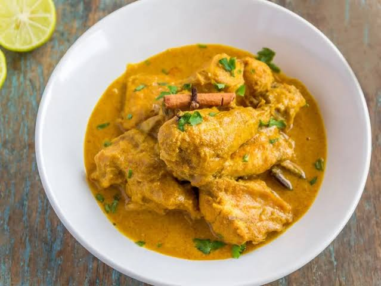
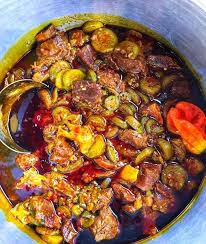
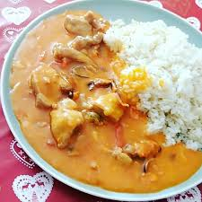
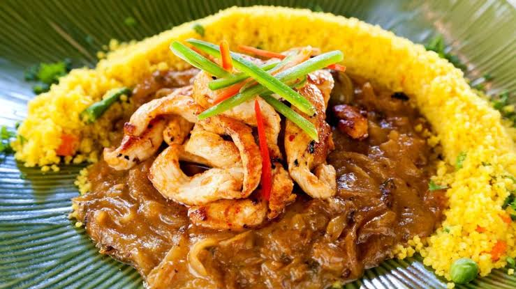
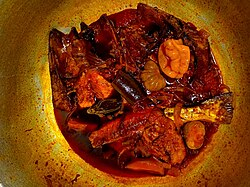

Caldo de Chabeu(Chebem)
A gastronomia da Guiné-Bissau reflete a diversidade cultural do país e a forte ligação com os recursos naturais. Os pratos tradicionais são preparados principalmente à base de arroz, peixe, carne, legumes e óleo de palma.
Entre os pratos mais conhecidos estão o arroz com peixe, caldo de mancarra (amendoim), caldo de palma,caldo siga e peixe seco. Esses pratos fazem parte do cotidiano da população e também são servidos em festas e ocasiões especiais.
A culinária guineense valoriza ingredientes locais e métodos tradicionais de preparo, transmitidos de geração em geração, representando um importante patrimônio cultural do país.
Caldo de Chabeu(Chebem)

Caldo de Mancarra(Amendoim)

Caldo de Siga (candja e óleo de palma)

poportada(Arus riba de arus)

Refogado de Camarão

Caldo de óleo de palma com Bagre Fumado( caldo de citi)